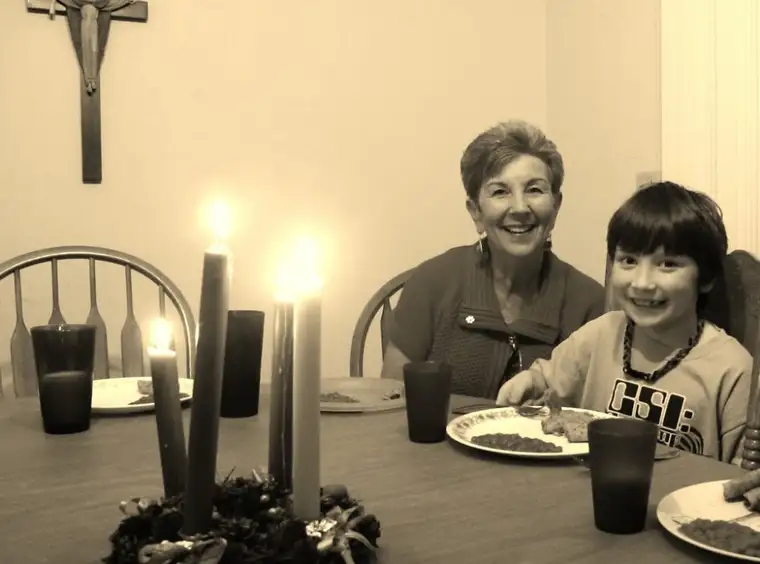

 |
| Grandma Bev and Adam readying for dinner by Advent candlelight |
{kind=link}
{kind=link}
{kind=link}
{kind=link}
As you well know, Santa, part of our weekend required celebration. I mean, how can I not rejoice over the golden birthday of my firstborn son? Look at him here, just a decade ago, though it seems like yesterday. He was so excited to have his birthday at Space Aliens with his friends. (Oh my, I did look festive in my alien-ears headband, didn’t I?).
{kind=link}
And here he is now…wow. I just can’t believe he’s this big. I mean, he’s really more man than boy now by the looks of it. It seemed so far off just a short while ago.
{kind=link}
The celebrating didn’t really stop for long this weekend. The impromptu concert the kids put on just before their grandparents headed out was so unexpected, and so lovely! How could a mama not feel deeply blessed by such sweet music?
{kind=link}
{kind=link}
{kind=link}
Thankfully we had a chance to quiet down, just long enough to take part in a little celebration we’ve come to know as the Joy Bag, courtesy of our first-grader. (See post on a past Joy Bag event for more…). It was beautiful; truly it was. And as you know (because you see all) we ended it by opening some gifts early. It was our daughter’s suggestion (the gifts were from her) and seemed like the right thing to do. I can’t help but giggle remembering what a hit the “noise putty” was, and how much fun the boys had making “farting” sounds with the putty. (*sigh) Laughter really is the best medicine, and we had quite a bit of that erupting through the house this weekend.
{kind=link}
So Santa, we did let that fourth candle get to us. But I think this is how it was supposed to be. It was a really good weekend, and despite the festive mood, I’m still holding fast to what it’s all about. Truth be told, I don’t need much else for Christmas.
Well, there is that one thing…but I can wait.
See you soon, Santa. I’ll be up watching for you, waiting with the coffee for you and the sugar cubes for the reindeer, just like when I was a little girl. Safe travels. It might be rough-landing on the snow-less landscape this year, but I trust you’ve maneuvered your way through all kinds of scenarios and will handle it as well as always.
Love,
Roxane
P.S. If you want to hear our little guy playing just a wee bit of “Spirit of the Radio” by Rush as you’re getting ready to load up your sleigh, go here. He’s just starting out but we’re impressed by how quickly he’s catching on. Maybe this will help you feel more confident the musical gift he’s requested is the right fit.